Business problem
Depression is a substantial mental health concern that exerts a pervasive impact on people on a global scale. A medical issue's prompt identification and timely intervention are essential for efficiently implementing treatment strategies (Hug et al., 2021). This white paper aims to construct a machine-learning model that can predict the probability of an individual experiencing depression by integrating several socioeconomic attributes. Accurately identifying individuals vulnerable to specific dangers makes it possible to offer suitable assistance and solutions.
Background/History
Depression is a prevalent and consequential mental health concern that impacts many individuals globally, beyond geographical, cultural, and demographic limitations (Sawyer et al., 2012). The condition in question is characterized by its intricate nature, which involves many elements contributing to its development. Consequently, it becomes difficult to diagnose and successfully handle this condition accurately. The prompt detection of depression is crucial for delivering suitable assistance and intervention to individuals requiring it. The conventional approaches to diagnosing depression frequently depend on selfreporting symptoms and clinical evaluations, which may introduce subjectivity and susceptibility to bias (Zhou, et al., 2023). Moreover, due to the social disapproval around mental health concerns, many persons may hesitate to pursue assistance or reveal their symptoms. Utilizing machine learning methodologies is a prospective approach to tackling this challenge (Taleb et al., 2021). Through the utilization of socioeconomic variables and datadriven models, the objective is to develop a predictive tool to identify individuals who are susceptible to experiencing depression. This technology has the potential to significantly transform the process of identifying depression at an early stage, hence enabling more prompt and focused therapies, enhancing mental health outcomes, and mitigating the social expenses linked to untreated depression.
Data Explanation
The dataset, named "b_depressed.csv," from Kaggle
(https://www.kaggle.com/datasets/diegobabativa/depression)
comprises a thorough compilation
of data related to individuals who participated in a survey. The dataset includes a variety of
factors, including socioeconomic indicators, sources of income, expenses, and self-reported
levels of depression among the individuals surveyed. The dataset consists of 1429 observations,
which include 23 variables
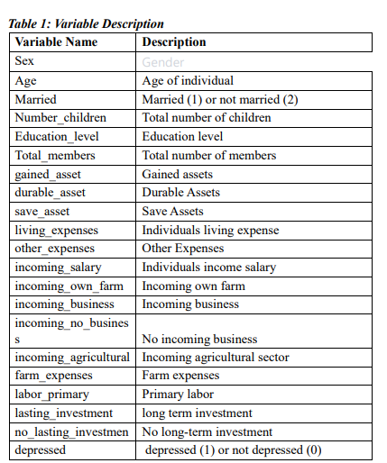
Methods Data Preprocessing Dealing with Missing Value
In order to ensure the integrity of the data, any missing values present in the dataset were handled through the utilization of suitable imputation methods. The presence of missing data can introduce bias or compromise the reliability of research findings. Consequently, it is crucial to address this issue systematically. Missing values were identified and removed from the dataset. The number of lasting investment variable recorded 20 missing values, while the rest recorded no missing values.
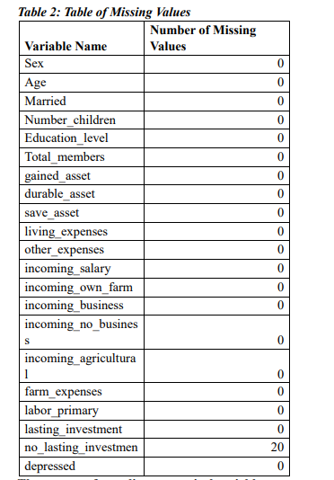The process of encoding categorical variables
Categorical variables are of considerable importance in the analysis of socioeconomic data. In order to render them compatible with machine learning techniques, we employed the technique of one-hot encoding. This methodology transforms categorical variables into a numerical representation by generating binary columns for each category. By employing this approach, the categorical data's integrity is retained while ensuring its compliance with the prediction models.
Standardization/Normalization
The numerical features present in the dataset underwent either standardization or normalization. The standardization process guarantees that numerical qualities possess a mean value of zero and a standard deviation of one. On the other hand, normalization involves scaling numbers to a predetermined range, such as the interval [0, 1]. Ensuring fair comparisons of numerical features is of utmost importance, as it prevents traits with greater scales from exerting undue influence over the modeling process.
Model Construction The investigation of algorithms
This project's scope encompassed an examination of many machine learning algorithms
to determine the optimal model for forecasting the likelihood of depression. The algorithms
under consideration were:
1) Logistic Regression is a fundamental (Cokluk, 2010) linear model commonly
employed for binary classification applications.
2) Random Forests, a versatile (Cornelius & Shanthini, 2023) ensemble method, can
effectively capture intricate correlations within the dataset.
3) Support Vector Machines (SVM) is a machine learning algorithm commonly used
for classification and regression tasks (Noble, 2006). SVMs are based on finding an optimal
hyperplane that separates different classes. This technique is highly effective for both linear and
nonlinear classification tasks.
The investigation of various algorithms facilitated the identification of the model that
exhibited the highest level of performance in terms of predictive accuracy, precision, recall, and
F1-score.
Parameter Tuning
Parameter tuning, referred to as hyperparameter tuning, entails the systematic selection of optimal hyperparameters for a machine learning algorithm. Hyperparameters refer to predetermined settings not derived from the data but established before the training process. These settings possess the potential to (Zaki et al., 2021) exert a substantial influence on the model's performance. The parameter tuning process entails systematically exploring various combinations of hyperparameters and assessing the model's performance using cross-validation. The objective is to identify the hyperparameters that yield optimal model performance on the validation dataset.
Feature Selection
Selecting relevant features from a given dataset is called feature selection. The process of feature selection holds significant importance in the study. In order to ascertain the characteristics that substantially contribute to the model's predictive capability, we employed feature importance scores. The scores provide valuable insights into the relative impact of different characteristics on the model's output. Features that possess greater significance scores were deemed to be more pertinent in the prediction of depression risk.
Selecting Relevant Features
Identifying key characteristics is a crucial task, and it is equally imperative to carefully choose a subset of features that optimizes predicted accuracy while limiting the potential for introducing bias. Ten best features were selected from the dataset using this method.
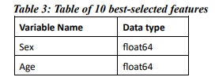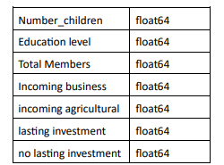
Feature Importance
Feature importance is frequently employed in machine learning to ascertain the individual contributions or levels of significance of features (also known as variables or attributes) within a prediction model. Understanding the features that exert the most influence on the predictions made by the model is beneficial. Age, education level, number of children, no lasting investment, and farm expenses are the top 5 (see Appendix A) most important features in predicting depression.
Model Evaluation
In order to appropriately evaluate the performance of our models, the dataset was divided
into two distinct subsets: a training set and a testing set. The training set was utilized to train
the
model, while the testing set was set aside to evaluate its performance on data that had not been
previously encountered (Vrigazova, 2021). This methodology enables us to assess the model's
capacity to extrapolate to novel instances.
Performance metrics are quantitative measures used to evaluate and assess the
performance of a system, process, or individual. These metrics provide objective data. The
models were assessed using a variety of performance indicators, which encompassed:
1) Accuracy refers to measuring accurately anticipated cases about the total number
of cases.
2) Precision refers to the capacity to categorize instances as positive examples
accurately.
3) Recall refers to the cognitive capacity to accurately identify and retrieve all
pertinent cases or instances relevant to a certain context or situation.
4) The F1-score is a metric that quantifies the balance between precision and recall
by calculating their harmonic mean.
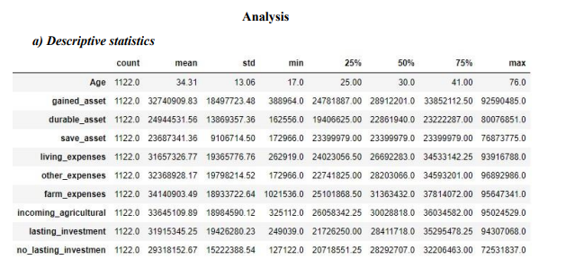
The table above summarizes descriptive statistics, including mean, standard deviation,
minimum, and maximum of all the numeric variables.
b) Correlation Analysis
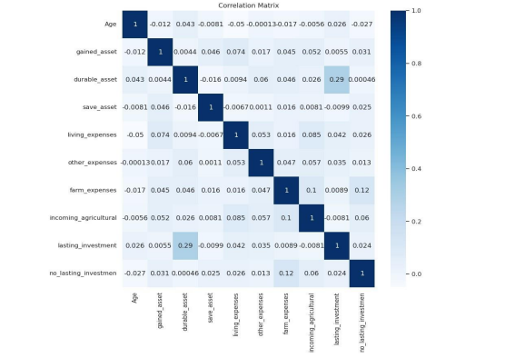
As age increases, living expenses decrease modestly (-0.05). Age is weakly negatively
correlated with no_lasting_investment (-0.027), suggesting older people may have less no-lasting
investments.
Gained asset has a weak positive association with living expenses (0.074), other expenses
(0.017), farm expenses (0.045), incoming_agricultural (0.052), and no_lasting_investment
(0.031). This implies that gained assets increase these factors.
Durable asset has a weak positive association with lasting_investment (0.29), suggesting
that families with more durable assets have longer-lasting investments.
The weak negative link between save asset and living expenses (-0.0067) suggests that
people with more savings may spend less.
Living expenses are slightly positively correlated with farm expenses (0.016) and
no_lasting_investment (0.026).
Other expenses are weakly positively correlated with durable assets (0.06), living
expenses (0.05), and farm (0.047) variables. This implies that higher other expenses increase
these factors.
Farm expenses are weakly positively correlated with gained assets (0.045), durable assets
(0.046), living expenses (0.016), and incoming_agricultural (0.1). These variables are higher
with larger farm expenses.
Incoming agriculture is weakly positively correlated with gained assets (0.052), living
expenses (0.085), and farm expenses (0.1). This implies that agricultural revenue increases
these
factors.
A weak positive correlation between lasting investment and no_lasting_investment
(0.024) suggests a relationship between these two investment characteristics.
No lasting investment is weakly positively correlated with gained assets (0.031), save
assets (0.025), and farm expenses (0.12). Thus, larger no-lasting investments are linked to
higher
of these variables.
c) Exploratory Data Analysis
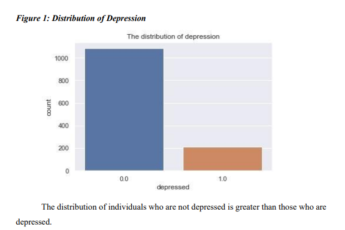
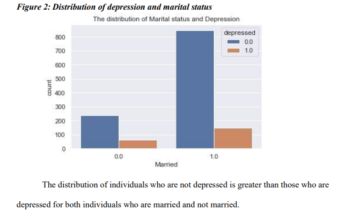
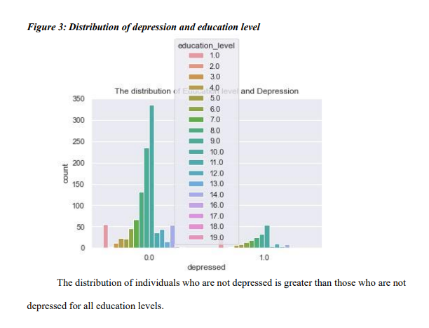
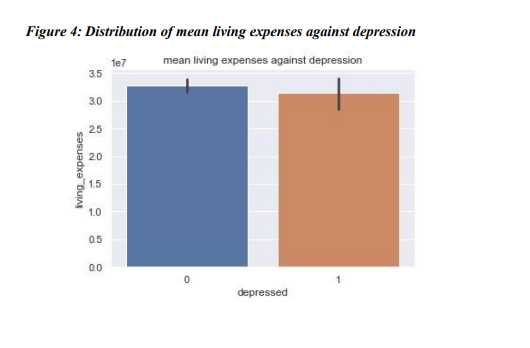
The mean of living expenses is higher for individuals who are not depressed than those
who are depressed.
d) Model Evaluation
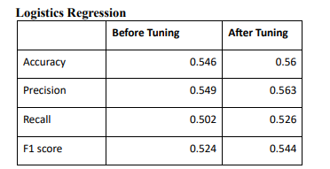
Before Tuning
Accuracy (0.546): The model accurately predicted 54.6% of cases before adjusting.
Precision (0.549): The model achieved 54.9% accuracy in positive predictions before
adjustment.
Recall (0.502): The model accurately identified 50.2% of positive cases before adjusting.
F1 score (0.524): The F1 score was 52.4%, the harmonic mean of precision and recall and
balances them.
After Tuning
Accuracy: The model's accuracy increased to 56.0%, predicting the outcome 56.0% of the
time.
Precision (0.563): The model's positive predictions were 56.3% correct after adjustment.
Recall (0.526): The model accurately identified 52.6% of positive cases after adjusting.
A greater balance between precision and recall was seen following tweaking, as the F1
score rose to 54.4%.
The findings indicate that following the tuning process, there has been a marginal
enhancement in the model's overall performance compared to the previously presented results.
The proposed method exhibits superior accuracy, precision, recall, and F1 score performance.
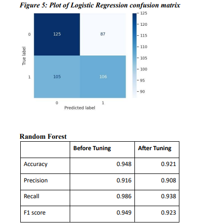
Before Tuning
Accuracy (0.948): Before adjusting, the random forest model predicted 94.8% of dataset cases
accurately.
Precision (0.916): The model achieved 91.6% accuracy in positive predictions before
adjustment.
Recall (0.986): The model accurately identified 98.6% of positive cases before adjusting.
F1 score (0.94): The F1 score was 94.9%, the harmonic mean of precision and recall and
balances them. High F1 scores suggest well-balanced models.
After Tuning
Accuracy: The model's accuracy dropped to 92.1%, meaning it accurately predicted
92.1% of cases.
Precision (0.908): The model's positive predictions were around 90.8% right after
adjustment.
Recall (0.938): The model successfully identified 93.8% of positive cases after adjusting.
F1 Score (0.923): After tuning, the F1 score was 92.3%, a solid balance between
precision and recall, although lower than before tuning.
The initial performance of the random forest model was highly satisfactory. Although
there was a modest decline in certain performance indicators upon tuning, the model continues to
exhibit robust predictive skills, rendering it well-suited for the classification task.
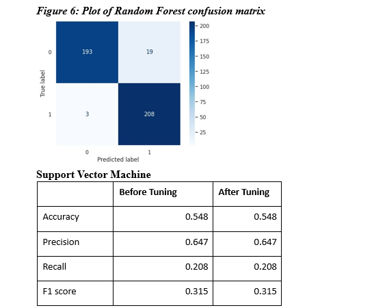
Before Tuning
Accuracy (0.548): Before adjusting, the SVM model predicted 54.8% of dataset cases
accurately.
Precision (0.647): 64.7% of the model's positive predictions were right before adjustment.
Recall (0.208): The model accurately identified only 20.8% of positive cases before
adjusting.
F1 score (0.315): The F1 score was 31.5%, the harmonic mean of precision and recall and
balances them. It is low, however.
After Tuning
Accuracy (0.548): Tuning did not increase the model's accuracy by 54.8%.
Precision (0.647): After adjusting, precision remained at 64.7%, suggesting that the
proportion of real positive predictions among all positive predictions stayed stable.
Recall (0.315) The model's recall remained at 20.8%.
F1 Score (0.315): After tuning, the F1 score remained low at 31.5%.
The accuracy, precision, recall, and F1 score values exhibit a consistent pattern both
before and after tuning, suggesting that the tuning method did not substantially enhance the
model's performance.
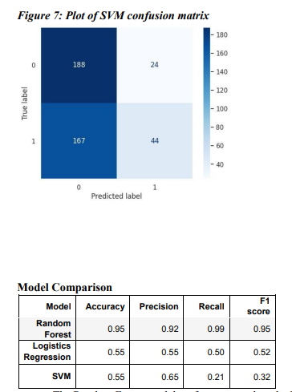
The Random Forest model performs more than the Logistic Regression and Support
Vector Machine (SVM) models in terms of accuracy, precision, recall, and F1 score.
The Logistic Regression and Support Vector Machine (SVM) model's performance
metrics exhibit similarities but generally demonstrate inferior performance compared to the
Random Forest model.
The optimal model selection is contingent upon the particular objectives of the task at
hand. The Random Forest model is optimal when prioritizing high precision and recall. Logistic
Regression may be the better choice if prioritizing computational efficiency and simplicity.
Nevertheless, enhancing the SVM model to attain a comparable level of competitiveness with the
remaining two models is imperative.
Conclusion
This research study involved an analysis of the efficacy of various machine learning
models in predicting outcomes about mental health concerns. The models under consideration
encompassed Random Forest, Logistic Regression, and Support Vector Machine (SVM). The
models underwent evaluation using a range of performance indicators, including accuracy,
precision, recall, and F1 score.
The findings of our investigation unveiled substantial disparities in the predictive
capabilities of the models. The Random Forest model exhibited exceptional performance, with
elevated accuracy, precision, recall, and F1 scores. In contrast, it can be observed that both
the
Logistic Regression and Support Vector Machine (SVM) models demonstrated comparatively
inferior performance in terms of the evaluated metrics. Specifically, the SVM model faced
challenges in achieving satisfactory recall and F1 scores.
This study not only makes a valuable contribution to the domain of mental health
prediction but also holds the potential to benefit individuals' lives by mitigating stigma and
encouraging the adoption of help-seeking behaviors. This highlights the significance of
utilizing
sophisticated technology to bolster mental well-being and emphasizes the necessity for
continuous research and collaboration in mental health and machine learning.
Assumptions
During constructing and evaluating our prediction models, several assumptions were
made.
1) The presented dataset exhibits characteristics indicative of the larger population,
and the survey data collected is precise and dependable.
2) The features employed for prediction are pertinent to the discernment of
depression.
3) The data partitioning into training and testing sets was conducted randomly,
adhering to established guidelines for evaluating machine learning models.
4) The fairness criteria employed for bias evaluation capture potential biases
inherent in the model predictions.
Limitations
1) Data Quality and Availability: This research's data quality and availability can
greatly affect the model's performance and generalizability. The model's predictions may only
represent the population if the dataset is large, biased, complete, and diverse.
2) Model Generalizability: Machine learning models behave differently across
datasets and populations. Models trained on one population or dataset may perform poorly on
another. Model performance should be validated using external datasets to determine
generalizability.
3) Ethics: Machine learning for mental health prediction presents privacy and
prejudice problems. Models may promote data biases, resulting in unfair or biased results. These
ethical issues and privacy and rights protections must be addressed.
4) Interpretability: Complex ensemble approaches like Random Forest may need
more interpretability. Understanding how the model predicts can be tough, making it hard to
explain its judgments. This can hinder user and stakeholder trust.
5) Resource and Access Limitations: Implementing machine learning models in
mental health settings may need complex equipment, data, and experience. More resources can
prevent the widespread implementation of such models.
6) Ethical Issues in Mental Health Prediction: Privacy, stigma, and the repercussions
of being branded "at risk." can be difficult topics. These fears may discourage people from
joining prediction programs or seeking help.
7) Predictive models in healthcare, particularly mental health, may be regulated and
legal depending on the jurisdiction. These criteria must be followed for ethical and legal use.
Challenges
i. Data quality plays a crucial role in determining the success of machine learning projects.
Inaccurate or unfair models may arise when the data is characterized by noise, incompleteness,
or prejudice.
ii. The complexity of machine learning models might provide challenges in terms of
interpretability. This phenomenon can pose challenges in comprehending the functioning of the
model and discerning any inherent biases that may be present.
iii. Overfitting is a phenomenon that arises when a model becomes excessively tailored to
the training data, resulting in a diminished ability to generalize unseen data effectively. This
phenomenon has the potential to result in forecasts that could be more precise and reliable.
iv. Underfitting is when a model needs to adequately capture the patterns and nuances in the
training data, resulting in suboptimal predictive performance.
v. Bias can manifest in machine learning models through various channels, including the
data utilized, the algorithms employed, and the individuals responsible for developing and
implementing these models. The presence of bias can result in outcomes that are unjust and
discriminatory.
vi. Explaining how machine learning models make decisions can be challenging. This can
make it challenging to rely on and employ the models in safety-critical applications.
Future Uses/Additional Applications
Although the existing models demonstrate promise, there is a need for additional
refinement to enhance their applicability across a wider range of contexts.
1) Personalized interventions involve the customization of therapies to align with the
unique risk profiles of individuals.
2) Population-level analysis involves expanding our existing models to examine the
patterns and trends of depression within broader populations.
3) Integrating real-time data into various systems and processes has become
increasingly prevalent in contemporary society. Leveraging contemporary data sources to
enhance predictive capabilities
Recommendations
Based on the results of our research, we propose the following recommendations:
1) Examine supplementary functionalities: To improve the model's effectiveness, it
is recommended to incorporate supplementary socioeconomic and psychological variables.
2) Conduct a comprehensive examination of sophisticated algorithms. Conducting
experiments with advanced machine learning techniques to enhance the accuracy of predictions.
3) Perform external validation: It is imperative to assess the generalizability of our models
by subjecting them to validation on diverse datasets.
4) Engage in collaborative efforts with mental health professionals: It is advisable to
enlist the expertise of professionals in order to obtain specialized knowledge and enhance the
comprehensibility of the model.
Implementation plan
To implement the following recommendations, the following plan is proposed:
1) Data augmentation: Procure and incorporate pertinent supplementary data
sources, hence broadening the range of features.
2) This study aims to conduct algorithm experimentation in machine learning,
specifically focusing on advanced algorithms such as gradient boosting and neural networks. The
primary aim is to optimize the performance of these algorithms by fine-tuning their
hyperparameters.
3) External validation involves the process of validating models using datasets that
are external to the ones used for model development. This approach allows for assessing model
performance in various demographic and cultural situations.
4) Collaboration entails engaging with mental health practitioners and researchers to
acquire valuable insights about the field and enhance the therapeutic applicability of our
models.
Ethical Consideration
In order to forecast depression, the following ethical factors are proposed:
1) Privacy and confidentiality: Survey participants' information is kept private and is
only used for research purposes.
2) Bias mitigation: Detection and correcting model biases to ensure fairness and
equity in forecasts.
3) Informed consent: Survey participants are fully informed about the study's
objectives, data collecting, and data utilization, and they can withdraw consent at any time.
References
Cai, S., Zhang, N., Zhu, J., Liu, Y., & Zhou, Y. (2023). A Study on the Performance of
Generative
Pre-trained Transformer (GPT) in Simulating Depressed Individuals on the Standardized
Depressive Symptom Scale. arXiv preprint arXiv:2307.08576.
Cokluk, O. (2010). Logistic Regression: Concept and Application. Educational Sciences: Theory
and Practice, 10(3), 1397-1407.
Cornelius, K., & Shanthini, B. (2023). Air Quality Data Analysis And Prediction Using Modified
Differential Evolution-Random Forest Algorithm. Journal of Survey in Fisheries
Sciences, pp. 3067–3078.
Doukani, A., Pashoja, A. C., Fanaj, N., Qirjako, G., Meksi, A., Mustafa, S., ... & Hug, J.
(2021).
Organizational readiness for implementing an internet-based cognitive behavioral therapy
intervention for depression across community mental health services in Albania and
Kosovo: directed qualitative content analysis. JMIR formative research, 5(11), e29280.
Elgeldawi, E., Sayed, A., Galal, A. R., & Zaki, A. M. (2021, November). Hyperparameter tuning
for machine learning algorithms used for arabic sentiment analysis. In Informatics (Vol.
8, No. 4, p. 79). MDPI.
Noble, W. S. (2006). What is a support vector machine? Nature Biotechnology, 24(12), 1565–
1567.
Vrigazova, B. (2021). The proportion for splitting data into training and test sets for the
bootstrap
in classification problems. Business Systems Research: International Journal of the
Society for Advancing Innovation and Research in Economy, 12(1), 228-242.
Wahab, O. A., Mourad, A., Otrok, H., & Taleb, T. (2021). Federated machine learning: Survey,
multi-level classification, desirable criteria and future directions in communication and
networking systems. IEEE Communications Surveys & Tutorials, 23(2), 1342–1397.
Ziaian, T., de Anstiss, H., Antoniou, G., Baghurst, P., & Sawyer, M. (2012). Resilience and its
association with depression, emotional and behavioral problems, and mental health
service utilization among refugee adolescents living in South Australia. International
Journal of Population Research, 2012
Gained asset has a weak positive association with living expenses (0.074), other expenses (0.017), farm expenses (0.045), incoming_agricultural (0.052), and no_lasting_investment (0.031). This implies that gained assets increase these factors. Durable asset has a weak positive association with lasting_investment (0.29), suggesting that families with more durable assets have longer-lasting investments. The weak negative link between save asset and living expenses (-0.0067) suggests that people with more savings may spend less.
Living expenses are slightly positively correlated with farm expenses (0.016) and no_lasting_investment (0.026).
Other expenses are weakly positively correlated with durable assets (0.06), living expenses (0.05), and farm (0.047) variables. This implies that higher other expenses increase these factors.
Farm expenses are weakly positively correlated with gained assets (0.045), durable assets (0.046), living expenses (0.016), and incoming_agricultural (0.1). These variables are higher with larger farm expenses.
Incoming agriculture is weakly positively correlated with gained assets (0.052), living expenses (0.085), and farm expenses (0.1). This implies that agricultural revenue increases these factors.
A weak positive correlation between lasting investment and no_lasting_investment (0.024) suggests a relationship between these two investment characteristics.
No lasting investment is weakly positively correlated with gained assets (0.031), save assets (0.025), and farm expenses (0.12). Thus, larger no-lasting investments are linked to higher of these variables.
Recall (0.502): The model accurately identified 50.2% of positive cases before adjusting. F1 score (0.524): The F1 score was 52.4%, the harmonic mean of precision and recall and balances them.
Precision (0.563): The model's positive predictions were 56.3% correct after adjustment. Recall (0.526): The model accurately identified 52.6% of positive cases after adjusting. A greater balance between precision and recall was seen following tweaking, as the F1 score rose to 54.4%.
The findings indicate that following the tuning process, there has been a marginal enhancement in the model's overall performance compared to the previously presented results. The proposed method exhibits superior accuracy, precision, recall, and F1 score performance.
Precision (0.916): The model achieved 91.6% accuracy in positive predictions before adjustment.
Recall (0.986): The model accurately identified 98.6% of positive cases before adjusting. F1 score (0.94): The F1 score was 94.9%, the harmonic mean of precision and recall and balances them. High F1 scores suggest well-balanced models.
Precision (0.908): The model's positive predictions were around 90.8% right after adjustment.
Recall (0.938): The model successfully identified 93.8% of positive cases after adjusting. F1 Score (0.923): After tuning, the F1 score was 92.3%, a solid balance between precision and recall, although lower than before tuning.
The initial performance of the random forest model was highly satisfactory. Although there was a modest decline in certain performance indicators upon tuning, the model continues to exhibit robust predictive skills, rendering it well-suited for the classification task.
F1 Score (0.315): After tuning, the F1 score remained low at 31.5%. The accuracy, precision, recall, and F1 score values exhibit a consistent pattern both before and after tuning, suggesting that the tuning method did not substantially enhance the model's performance.
1) The presented dataset exhibits characteristics indicative of the larger population, and the survey data collected is precise and dependable.
2) The features employed for prediction are pertinent to the discernment of depression.
3) The data partitioning into training and testing sets was conducted randomly, adhering to established guidelines for evaluating machine learning models.
4) The fairness criteria employed for bias evaluation capture potential biases inherent in the model predictions.
2) Model Generalizability: Machine learning models behave differently across datasets and populations. Models trained on one population or dataset may perform poorly on another. Model performance should be validated using external datasets to determine generalizability.
3) Ethics: Machine learning for mental health prediction presents privacy and prejudice problems. Models may promote data biases, resulting in unfair or biased results. These ethical issues and privacy and rights protections must be addressed.
4) Interpretability: Complex ensemble approaches like Random Forest may need more interpretability. Understanding how the model predicts can be tough, making it hard to explain its judgments. This can hinder user and stakeholder trust.
5) Resource and Access Limitations: Implementing machine learning models in mental health settings may need complex equipment, data, and experience. More resources can prevent the widespread implementation of such models.
6) Ethical Issues in Mental Health Prediction: Privacy, stigma, and the repercussions of being branded "at risk." can be difficult topics. These fears may discourage people from joining prediction programs or seeking help.
7) Predictive models in healthcare, particularly mental health, may be regulated and legal depending on the jurisdiction. These criteria must be followed for ethical and legal use.
ii. The complexity of machine learning models might provide challenges in terms of interpretability. This phenomenon can pose challenges in comprehending the functioning of the model and discerning any inherent biases that may be present.
iii. Overfitting is a phenomenon that arises when a model becomes excessively tailored to the training data, resulting in a diminished ability to generalize unseen data effectively. This phenomenon has the potential to result in forecasts that could be more precise and reliable.
iv. Underfitting is when a model needs to adequately capture the patterns and nuances in the training data, resulting in suboptimal predictive performance.
v. Bias can manifest in machine learning models through various channels, including the data utilized, the algorithms employed, and the individuals responsible for developing and implementing these models. The presence of bias can result in outcomes that are unjust and discriminatory.
vi. Explaining how machine learning models make decisions can be challenging. This can make it challenging to rely on and employ the models in safety-critical applications.
1) Personalized interventions involve the customization of therapies to align with the unique risk profiles of individuals.
2) Population-level analysis involves expanding our existing models to examine the patterns and trends of depression within broader populations.
3) Integrating real-time data into various systems and processes has become increasingly prevalent in contemporary society. Leveraging contemporary data sources to enhance predictive capabilities
1) Examine supplementary functionalities: To improve the model's effectiveness, it is recommended to incorporate supplementary socioeconomic and psychological variables.
2) Conduct a comprehensive examination of sophisticated algorithms. Conducting experiments with advanced machine learning techniques to enhance the accuracy of predictions. 3) Perform external validation: It is imperative to assess the generalizability of our models by subjecting them to validation on diverse datasets.
4) Engage in collaborative efforts with mental health professionals: It is advisable to enlist the expertise of professionals in order to obtain specialized knowledge and enhance the comprehensibility of the model.
1) Data augmentation: Procure and incorporate pertinent supplementary data sources, hence broadening the range of features.
2) This study aims to conduct algorithm experimentation in machine learning, specifically focusing on advanced algorithms such as gradient boosting and neural networks. The primary aim is to optimize the performance of these algorithms by fine-tuning their hyperparameters.
3) External validation involves the process of validating models using datasets that are external to the ones used for model development. This approach allows for assessing model performance in various demographic and cultural situations.
4) Collaboration entails engaging with mental health practitioners and researchers to acquire valuable insights about the field and enhance the therapeutic applicability of our models.
1) Privacy and confidentiality: Survey participants' information is kept private and is only used for research purposes.
2) Bias mitigation: Detection and correcting model biases to ensure fairness and equity in forecasts.
3) Informed consent: Survey participants are fully informed about the study's objectives, data collecting, and data utilization, and they can withdraw consent at any time.
Cokluk, O. (2010). Logistic Regression: Concept and Application. Educational Sciences: Theory and Practice, 10(3), 1397-1407.
Cornelius, K., & Shanthini, B. (2023). Air Quality Data Analysis And Prediction Using Modified Differential Evolution-Random Forest Algorithm. Journal of Survey in Fisheries Sciences, pp. 3067–3078. Doukani, A., Pashoja, A. C., Fanaj, N., Qirjako, G., Meksi, A., Mustafa, S., ... & Hug, J. (2021).
Organizational readiness for implementing an internet-based cognitive behavioral therapy intervention for depression across community mental health services in Albania and Kosovo: directed qualitative content analysis. JMIR formative research, 5(11), e29280. Elgeldawi, E., Sayed, A., Galal, A. R., & Zaki, A. M. (2021, November). Hyperparameter tuning for machine learning algorithms used for arabic sentiment analysis. In Informatics (Vol. 8, No. 4, p. 79). MDPI.
Noble, W. S. (2006). What is a support vector machine? Nature Biotechnology, 24(12), 1565– 1567.
Vrigazova, B. (2021). The proportion for splitting data into training and test sets for the bootstrap in classification problems. Business Systems Research: International Journal of the Society for Advancing Innovation and Research in Economy, 12(1), 228-242. Wahab, O. A., Mourad, A., Otrok, H., & Taleb, T. (2021). Federated machine learning: Survey, multi-level classification, desirable criteria and future directions in communication and networking systems. IEEE Communications Surveys & Tutorials, 23(2), 1342–1397. Ziaian, T., de Anstiss, H., Antoniou, G., Baghurst, P., & Sawyer, M. (2012). Resilience and its association with depression, emotional and behavioral problems, and mental health service utilization among refugee adolescents living in South Australia. International Journal of Population Research, 2012